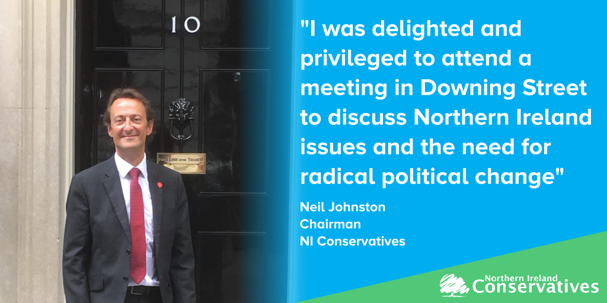
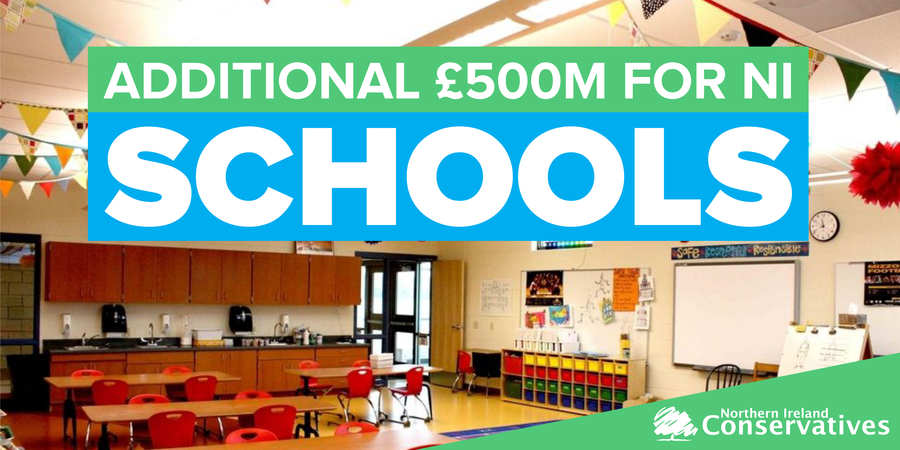
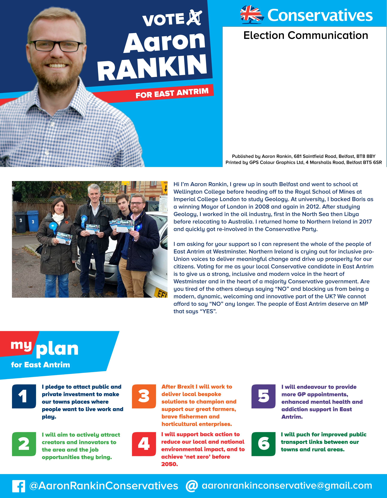
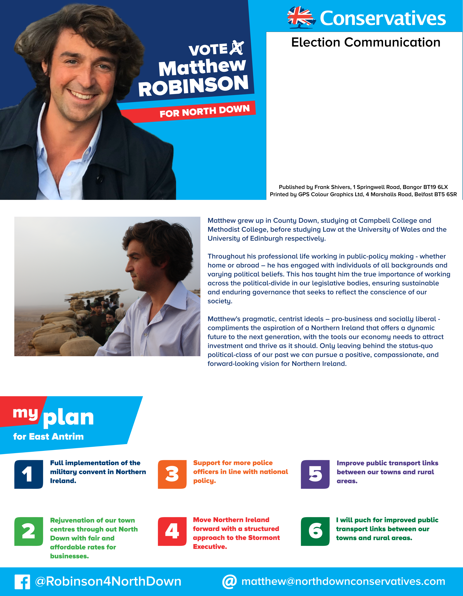
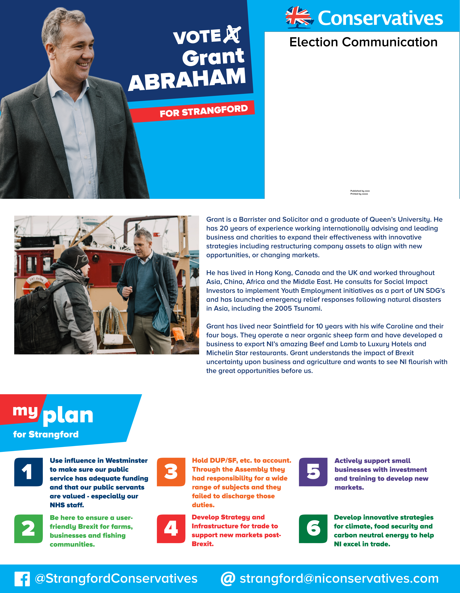

Portfolio
Social Media Graphics



Social Media Videos
Northern Ireland Conservatives
General Election 2019
Only 3 hours till the polls close.
— Aaron Rankin (@Aaron_R_Rankin) December 12, 2019
If you’re in #NorthDown & haven’t voted then drop by the polling station & vote for @Conservatives candidate @matrobinson, a man with experience working in Brussels who wants to deliver the referendum result.#VoteConservative #GE2019 pic.twitter.com/tBHfyD14vV
Leaflet Designs




Logo Designs
GEAS Capital
Tory Talks Podcast